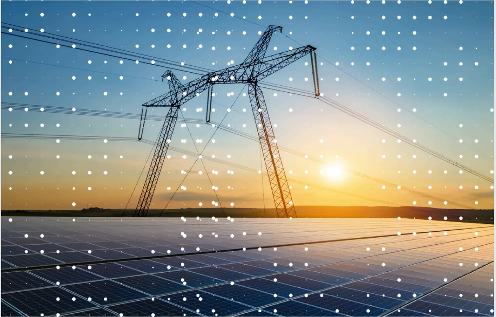
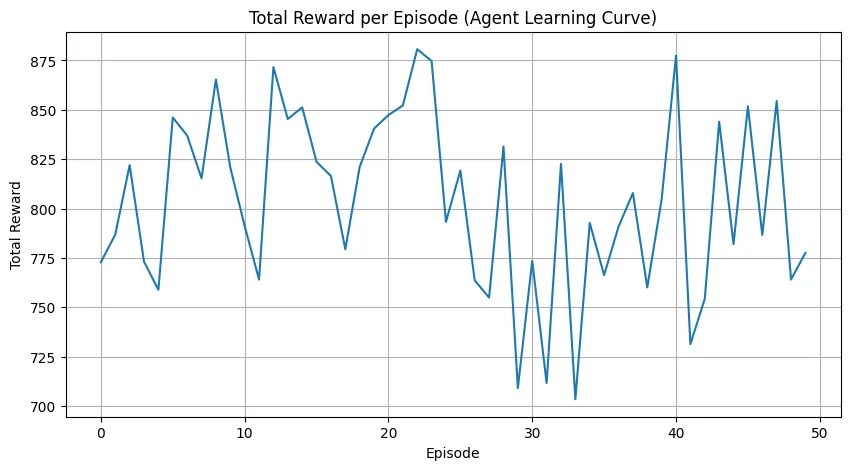
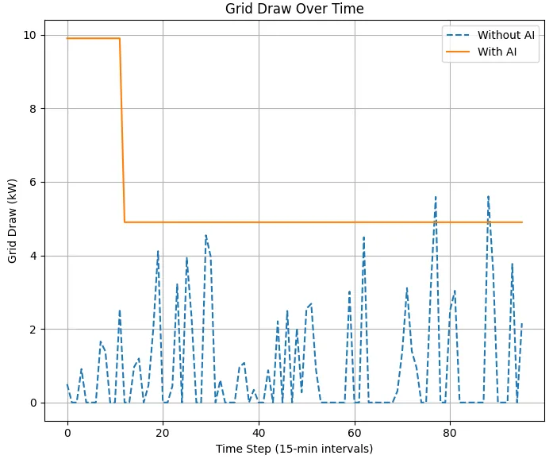

case study · independent build (archive)
Project Volta
AI-driven battery-grid simulation · Independent build (archive)
Home batteries, modeled as a coordinated virtual power plant, dispatched by a reinforcement-learning agent inside a custom Python simulation.
- Role
- Solo build: simulation & reinforcement learning
- Stack
- Python · TensorFlow (DQN) · scikit-learn · pandas · NumPy · Matplotlib · Jupyter
- Status
- Archived prototype (simulation)
the problem
Rising rooftop solar and EV charging strain local distribution grids, and unsynchronized home batteries leave stored capacity idle exactly when it's needed most. The premise behind Volta: coordinate a fleet of home batteries as a single virtual power plant that learns to discharge into demand peaks and recharge during troughs, smoothing the load the grid actually sees.
what i built
- Simulation environment: a custom Gym-style battery environment (
battery_env.py) modeling state-of-charge, household demand, and net grid draw across a 24-hour cycle - Reinforcement-learning agent: a TensorFlow Deep Q-Network (
train_dqn) that learns charge/discharge timing to shave peak draw, trained against the environment's reward signal - Demand forecasting: a scikit-learn model predicting next-hour grid demand (
volta_forecast) to inform the agent's decisions - Synthetic telemetry: a data generator producing simulated solar, demand, and battery streams (
volta_data.py→volta_simulated_data.csv) - Analysis & visualization: Matplotlib notebooks charting training reward and with-agent vs. without-agent outcomes (
volta_visualization)


simulated results

The trained agent manages a full day of energy behavior across 96 fifteen-minute intervals. Every result here comes from simulation against a no-control baseline, not on production hardware.
the production path: not built
The simulation is the proof of concept. A real deployment was deliberately left out of scope for this build, and I'm calling that out rather than implying it shipped:
No cloud deployment, device integration or live telemetry was built. The repository contains the simulation, models, and analysis only. That boundary is intentional.
engineering notes
- Modular
src/layout separating the environment from the RL control logic - Data, trained-model artifacts, and analysis committed alongside the notebooks so results can be regenerated end to end
- Reward shaping tuned so the agent prioritizes peak-shaving without over-cycling the battery